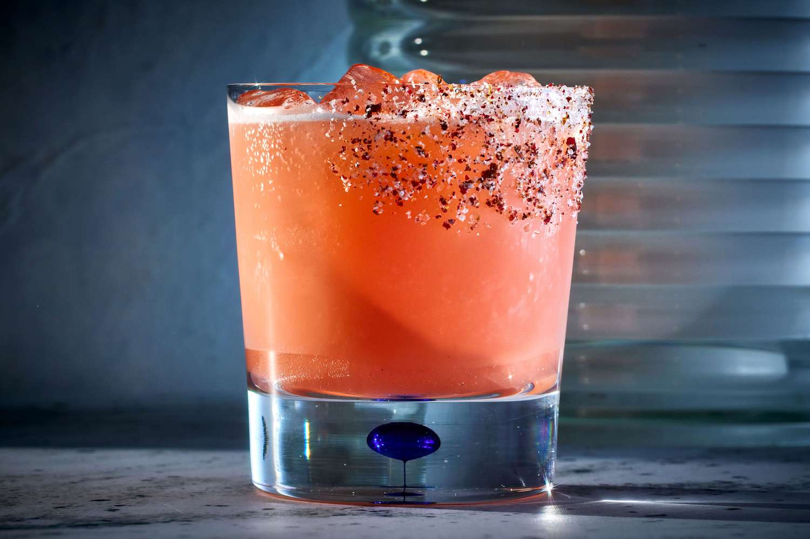

Love on the Rocks
Home

This is a simple cocktail that my girlfriend loves. This drink plays with those apple notes in the Apple Crown Royal and pairs it Cranberry flavors for both sweetness and that beautiful pink color.
A few things I suggest grabbing that'll pay dividends: I have a basic cocktail making kit she got me from a simple cocktail making kit. My girlfriend got me one from Walmart. If you don't have one, I highly suggest grabbing one. It's less than twenty bucks and makes life a lot easier. Plus you can pretend to be the cute bartender to her lonely drinker. Agave is awesome for sweetening up alcoholic drinks to taste if you don't feel up to making your own simple syrup. And lastly, what drink is finished without ice?
Ingridients
- 3 cups ice
- 1 oz apple crown royal
- 1.5 oz cran apple juice (I used Ocean Spray but any brand will do.)
- 1.5 oz apple juice
- 1-2 Tbsp agave
- 1.5 oz Sprite
Instructions
- Fill cocktail shaker with ice.
- Add Crown Royal, Cran Apple, and Agave to taste.
- Shake till well mixed. Taste for sweetness.
- Fill glasses with remaining ice. Pour drink evenly between two glasses.
- Add sprite until glass is full. (The red cranberry hue should fade to a lovely pink.
- Stir and serve!